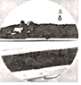
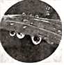
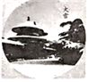
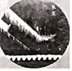
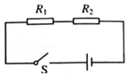
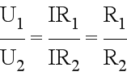
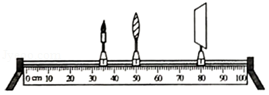

2018年北京市中考物理试题 · 选择题 第6、7、8、9、10题 · 对应解析
6. 下列实例中，为了减小摩擦的是（ ）
A. 足球守门员戴有防滑手套 B. 骑自行车刹车时用力捏闸
C. 运动鞋的底部制有凹凸不平的花纹 D. 给自行车的车轴加润滑油
【答案】D
【解析】A. 足球守门员戴有防滑手套，是在压力一定时，通过增大接触面粗糙程度的方法增大摩擦的；
B. 骑自行车刹车时用力捏闸，是在接触面一定时，通过增大压力的方法增大摩擦的；
C. 运动鞋的底部制有凹凸不平的花纹，是在压力一定时，通过增大接触面粗糙程度的方法增大摩擦的；
D. 给自行车的车轴加润滑油，可以将接触面分离，用光滑的油膜代替接触面，减小摩擦力；
故D是为了减小摩擦，符合题意。
点睛：重点是增大和减小摩擦力的方法，牢记影响滑动摩擦力的两个因素，即压力和接触面的粗糙程度，可以通过增大压力或增大接触面的粗糙程度来增大摩擦力，反之减小摩擦力，另外用滚动代替滑动可以大大减小摩擦力。
7. 下列实例中，属于做功改变物体内能的是（ ）
A. 锯木头时的锯条温度升高
B. 加入冰块的饮料温度降低
C. 倒入热牛奶的杯子温度升高
D. 放入冷水中的热鸡蛋温度降低
【答案】A
【解析】A锯木头时的锯条温度升高，机械能转化为内能，是通过做功的方法增加了物体的内能，故A符合题意； 加入冰块的饮料温度降低，饮料放出热量，冰块吸收热量，通过热传递的方式改变了内能，故B不符合题意；倒入热牛奶的杯子温度升高，牛奶放出热量，杯子吸收热量，通过热传递的方式改变了内能，故C不符合题意； 放入冷水中的热鸡蛋温度降低，鸡蛋放出热量，水吸收热量，通过热传递的方式改变了内能，故D不符合题意；故选A。
点睛：牢记改变物体内能的两种方式是解题的关键，即热传递和做功，两种方式对于内能的改变是等效的，两种方式很容易区分，做题不难。
8. 如图所示的物态变化实例中，由于液化形成的是（ ）
A.

立春时节冰化成的水B.

白露时节草叶上的露珠C.

大雪时节落在地上的雪D.

冬至时节房檐上的冰挂【答案】B
【解析】A. 立春时节冰化成的水，即固态变为液态的过程，是凝固现象，故A不符合题意；
B. 白露时节草叶上的露珠，是水蒸气遇冷液化形成的小水珠，故B符合题意；
C. 大雪时节落在地上的雪，雪是水蒸气遇冷凝华形成的，故C不符合题意；
D. 冬至时节房檐上的冰挂，是水凝固而变成冰，故D不符合题意；
故选B。
点睛：物质通常存在三种状态，物质由一种状态变为另一种状态的过程，叫物态变化，总共有六种变化过程，像这类的题目，只要记清楚物态变化过程即可正确解题。
9. 如图所示的电路中，电阻阻值R1＜R2．闭合开关S后，电阻R1、R2两端的电压分别为U1、U2，通过两个电阻的电流分别为I1、I2．下列判断中正确的是（ ）

A. I1=I2 B. I1＞I2 C. U1=U2 D. U1＞U2
【答案】A
【解析】如图电路，闭合开关S后，电阻R1、R2串联在电路中。
根据串联电路电流处处相等的特点可知，通过两电阻的电流相等，故A正确，B错误；
根据串联电路的分压特点，即：

，可见串联电路中电压与电阻成正比，因为R1＜R2，所以 U1<U2，故CD错误；故选A。
点睛：考查了串联电路的电流、电压特点，牢记串联电路的分压规律，即电压与电阻成正比，电阻越大，分得电压越多，是电路的基本特点，要能熟练应用。
10. 小军做凸透镜成像规律的实验时，将焦距为10cm的凸透镜固定在光具座上50cm刻度线处，光屏和点燃的蜡烛分别位于凸透镜两侧，蜡烛放置在35cm刻度线处，如图所示。移动光屏，直到在光屏上呈现烛焰清晰的像。下列说法中正确的是（ ）

A. 光屏上呈现的是烛焰的虚像 B. 光屏上呈现的是烛焰正立的像
C. 光屏上呈现的是烛焰放大的像 D. 该实验现象能说明照相机的成像特点
【答案】C
【解析】A. 光屏上能呈现烛焰的像，说明是实像，虚像不能成在光屏上，故A错误；
B. 凸透镜成实像时，都是倒立的，成虚像时是正立的，如图成的是实像，是倒立的，故B错误；
C. 由图知，物距位于一倍到二倍焦距之间，像距大于二倍焦距，成倒立放大的实像，故光屏上呈现的是烛焰放大的像，故C正确；
D. 该实验现象能说明投影机的成像特点，而照相机利用的是成缩小实像的规律，故D错误；
故选C。
点睛：凸透镜成像规律是常考试的内容，应牢记凸透镜的成像规律，有些同学总是记不住，要下点功夫，可以结合成像光路图进行练习、记忆。